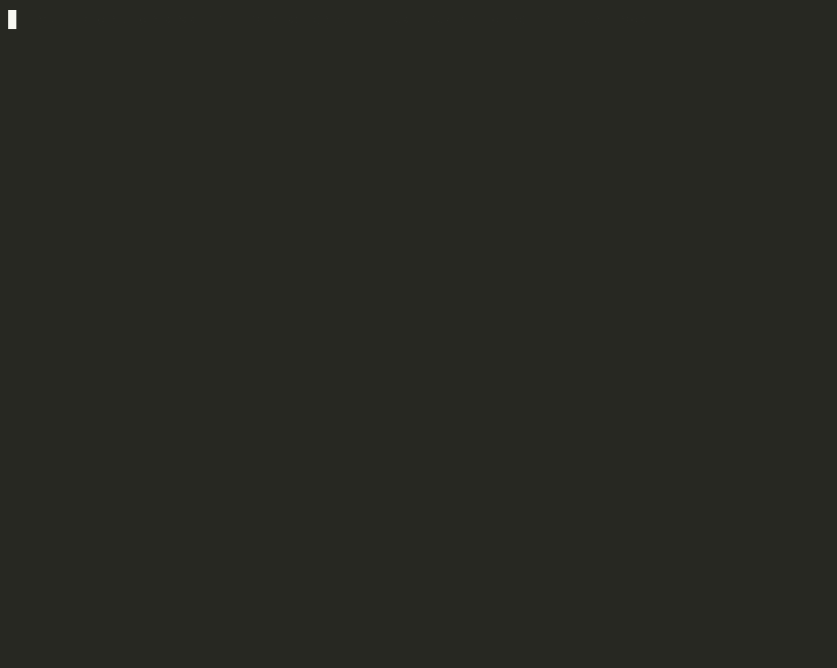
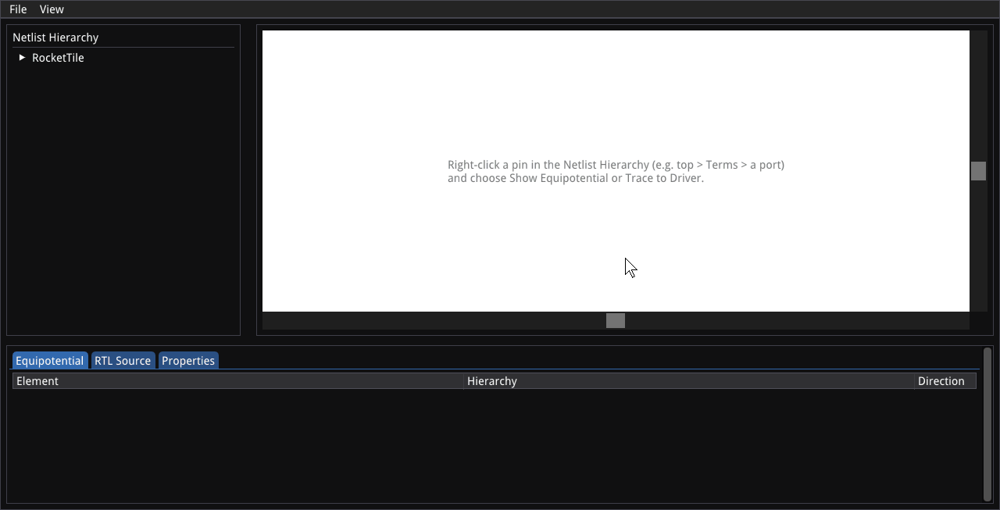

Explore
naja-scope
MCP server: drivers, loads, logic cones and source lines, for any MCP client.
17 design questions on CVA6 (RISC-V core)
Input tokens: 182k vs 888k, about 5x fewer
We don't build the brain. We build the tools any brain connects to.
KeplerTech builds open-source EDA tools designed to be driven by AI agents, and usable standalone by engineers. The tools contain no AI: the agent brings the reasoning, the tools bring exact, reproducible results.
Our tools give any agent a precise view, a strict checker and a way to show its work.
Any model, any MCP client. It decides; the tools answer.
Exact, token-bounded answers on RTL and netlists.
The agent applies its RTL or netlist edits through the Python API.
The policeman: proves each RTL or netlist edit keeps the same behavior.
Renders the design and formal diagnoses.
The agent edits RTL or netlists (refactor, optimize, fix); each change is proven before it is kept.
MCP server: drivers, loads, logic cones and source lines, for any MCP client.
Formal proof that two design versions behave identically.
RTL SEC checks the sequential behavior of SystemVerilog before vs after a change. Also gate-level LEC and SEC.
Schematic viewer for netlists and formal diagnoses. Makes results reviewable by humans.
Scripts on the same API: analyze and transform your designs, automate your flow.
naja is our open-source C++ netlist engine; najaeda is its Python package. Every tool above is built on them.
Two short recordings from real sessions: an AI agent exploring a design with naja-scope, and a schematic traced step by step in naja-schematic. Click a recording to open it full size.


kepler-formal is an equivalence checking tool for digital designs. It takes two versions of a design, before and after a change, and returns a proof or a counterexample.
kepler-formal -sv -v sec \ --sv_design1_flist before.f --sv_design1_top top \ --sv_design2_flist after.f --sv_design2_top top
RTL SEC on two SystemVerilog file lists. The same run can be described in a YAML file.
0Proved. All checked outputs were proved equivalent.1Partially proved. Some outputs were proved; the others are inconclusive.2Inconclusive. Neither a proof nor a counterexample.3Counterexample found. A definitive mismatch.SEC exit codes: a script or an agent reads the result without parsing a log.
kepler-formal-mcp is a local MCP server with three tools: gate_lec, gate_sec and rtl_sec. Each call runs one check and returns a structured result.
The checker only reads design files. It never edits them.
Command line or YAML configuration. Liberty libraries, and custom technology primitives written in Python.
The prepared SEC problem can be exported as BTOR2.
Used by OpenROAD for flow regression, and in hardware companies' CI/CD flows.
Apache-2.0 licensed. Supported and funded by NLnet through the NGI0 Entrust fund.
Open-source C++ netlist engine
All open source · dashed outline: third-party component
Our tools plugged into your flows and CI.
Custom tools and agent workflows on the naja APIs.
Maintenance, priority fixes and training.
Build your own independent, autonomous EDA with us.